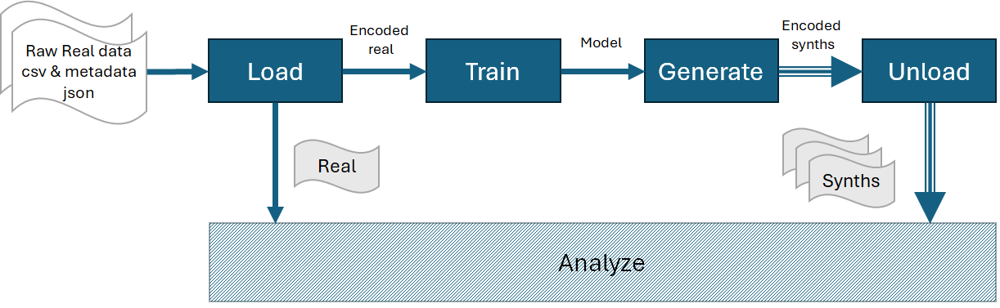

1. About pysdg
Python Synthetic Data Generator (pysdg) is a package designed by the Electronic Health Information Laboratory (EHIL) at the CHEO Reserch Institute. The package is used to streamline the generation of synthetic data for clinical trials and support various types of analyses. It ensures consistency and robustness when handling different clinical trial datasets and generative models. The package acts as a wrapper for several reliable generative modeling implementations and includes two modules: synth and privacy.
The synth module generates single or multiple synthetic datasets (synths) from the input raw tabular csv dataset. The basic description of the real raw dataset shall be provided as a json file. In the json file, the user defines the indices of the categorical variables, continuous variables and others. To generate synths, the user can use any of the available generators listed in Usage. Please note that the replica_seq generator is developed by Aetion Generate and requires proper license and credentials to be defined by the user in a separate .env file. However, pysdg can be used without the replica_seq generator.
The privacy module assesses both membership disclosure risk and attribution disclosure risk. The membership disclosure risk calculation is based on the paper Validating a membership disclosure metric for synthetic health data. The attribution disclosure risk calculation utilizes the Replica package, which requires appropriate licensing and credentials, typically provided by the user in a separate .env file. To calculate attribution disclosure risk, users must provide a list of quasi-identifiers in the previously mentioned json file.
The package offers a range of metrics to assess the utility of synthetic data, encompassing both replicability and fidelity. Users can perform specific downstream analyses (e.g., linear regression) on real and synthetic datasets to evaluate the reproducibility of their estimates. When multiple synthetic datasets are generated, the package supports combining these estimates using combining rules.
To assess replicability, the package provides four key metrics: decision agreement, estimate agreement, confidence interval overlap, and standardized difference index. Additionally, it includes both univariate and multivariate Hellinger distance metrics to evaluate data fidelity. Lastly, the package incorporates metrics to quantify synthetic data privacy risks, such as membership disclosure risk.
The following section illustrates pysdg core module to train models and generate synthetic data. We introduce the concepts of raw, real and synth datasets. Next, we provide an overview of pysdg’s invaluable add-ons for calculating privacy risks and other functionalities.
For any queries, please contact Samer El Kababji
1.1. Core functionality
pysdg includes the essential modules to carry out the functions illustrated by the dark background blocks in the above diagram. To generate one or multiple synthetic datasets, follow these steps in sequence: Load, Train, Generate, and Unload. The raw tabular dataset is loaded as a csv file. In addition, the dataset’s user-defined metadata is loaded as a json file. Please refer to Usage for the details of various keys in the json file. In return, the user gets the real dataset which is a clean version of the raw dataset. The real dataset can be used for direct comparison with the synthetic datasets. The load function also encodes the input raw data in a consistent manner and independent from the reading library. The encoded data is then used to train a selected generative model. Once trained, any required number of records and synthetic dataset versions are sampled form the generative model. The list of generated synthetic datasets are referred to as synths.